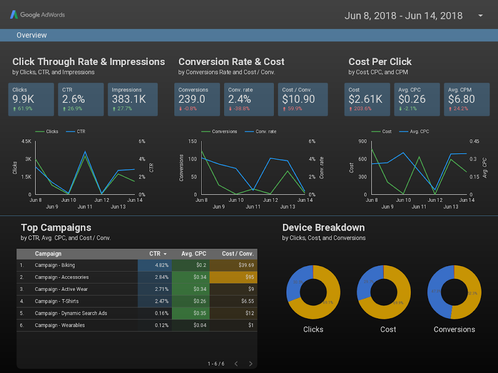
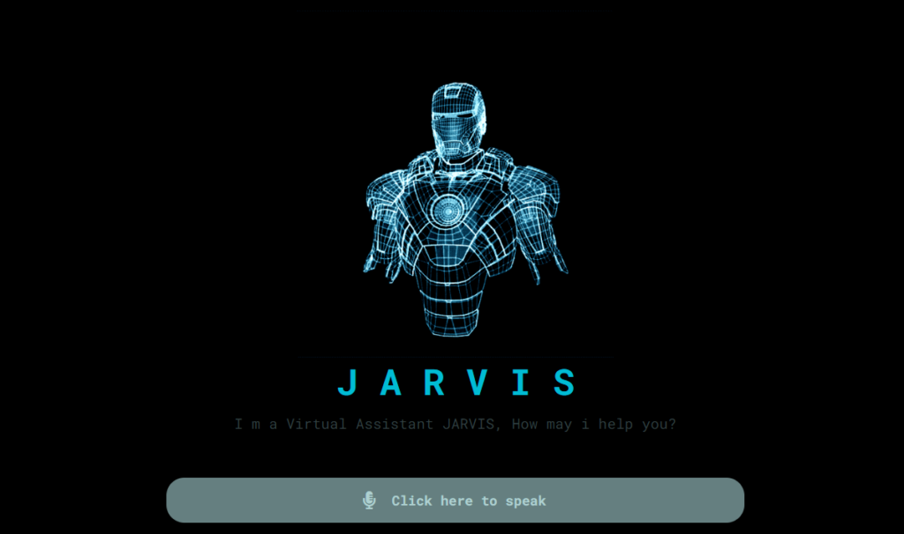
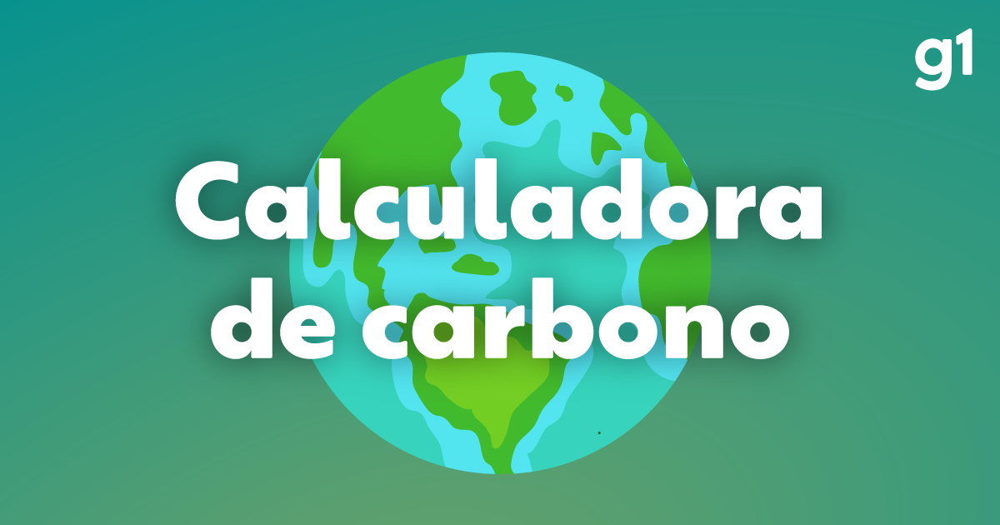

Meus projetos

Dashboard de Dados com JavaScript
Projeto de visualização de dados interativa utilizando JavaScript, Chart.js e Bootstrap. Permite analisar informações em tempo real com gráficos e filtros personalizáveis.

Assistente Virtual com HTML, CSS e JS
Criação de uma interface de assistente virtual com JavaScript, que responde a comandos simples e oferece uma experiência básica de chatbot na web.

Calculadora de Carbono Digital
Ferramenta educativa para calcular a pegada de carbono digital com base no uso de dispositivos eletrônicos. Ideal para conscientizar sobre sustentabilidade na tecnologia.